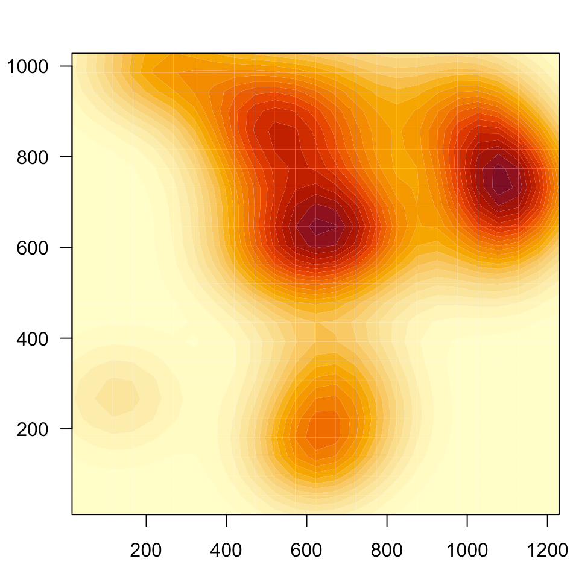
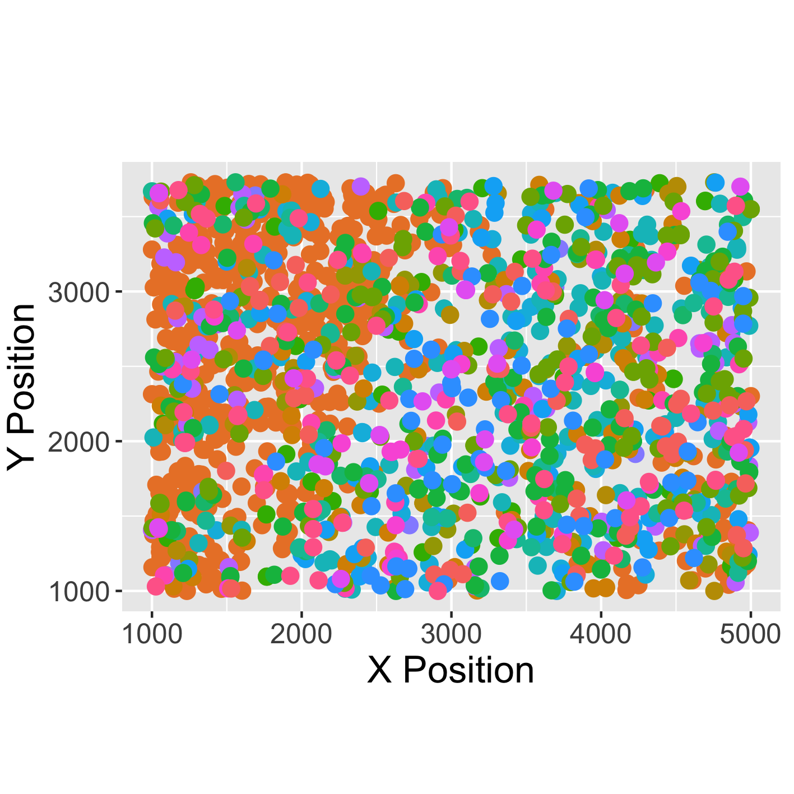

Hey there! My name is Morgan. I'm a 3rd year PhD candidate in the Department of Computational Medicine and Bioinformatics at the University of Michigan. I study how methods from GIS, spatial statistics, and graph theory/network science can be used to quantify spatial relationships in a biological setting. Most of my work involves applying these methods to tumor samples (usually H&E slides or immunohistochemistry stains), but I also look at spatial transcriptomics data in a variety of settings.
My favorite part of my work is that I get to answer exciting questions in biology and medicine. While I love writing code and doing math, knowing that my work helps increase the understanding of how the immune system reacts to cancer or how stem cells differentiate keeps me motivated and excited about my work!
Fun fact: I'm actually a Michigan native! I was born and raised in Muskegon, and I received my BS in Mathematics & Computer Science from Grand Valley State University.
When I'm not in the lab, I enjoy creative writing and playing piano & guitar. I also love to travel—the photo of the left is of me in the Distillery District in Toronto!
My goal for my research is to use my love of mathematics and my skills in programming to solve pressing health problems. This is pretty broad, so I've listed a few of the specific problems I am currently working on!
|  |
How can we borrow concepts from GIS and network science to quantify spatial arrangement of entities in a biological setting?Cell-cell interaction can be inferred using spatial imaging data. Fields such as GIS and network science offer a variety of methods to quantify spatial relationships. |
|---|---|
|  |
How can we use molecular imaging data to infer gene and protein interaction networks?Interaction networks have been created from sequencing data, as well as from single-gene ISH images. But how can we use multiplexed images, such as spatial transcriptomics or immunohistochemistry, to better understand how genes and proteins interact with one another? |
Here is some of the code I've written! Some of it is related to my research, and some of it is work I've done on the side.
Spatial Data ToolboxBasic scripts for working with spatial biological data, such as multiplexed immunohistochemistry and spatial transcriptomics. |
|
|---|---|
Differential Network Visualization(Description) |
|
Music Practice Viz(Description) |